Feeding a payload is a separate engineering problem.
Evidence through 21 October 2026: FM06-R1 geometry, FLR01/FLR02/FLR03 component fixtures and FCE12 contact verification. Seven Gen6 concepts share a 200 mm lateral transfer task for passive 1U/3U envelope surrogates. The receiver, gate, captive transfer and arrest requirements are evaluated separately from the launcher motor.
No feeder is selected or released for manufacture. Native CAD and a clear pose do not demonstrate handoff, safe power-off restraint, joint strength, complete installed hardware or reliability. Gen5 remains the evaluated configuration with its original failures.
Release and empty-carrier reset geometry
FM07-R5 adds captive receiver-lock pins, a hinged forward exit gate and prescribed empty-carrier reset. The 1U and 3U nominal cycles have 46 checked states, 34 additional door-angle samples and 40 continuous linear sweeps. Twenty native/STEP assemblies and 74 part exchanges pass independent readback. Rotary motion remains discretely sampled; these checks do not establish loaded clearance or hardware reliability.
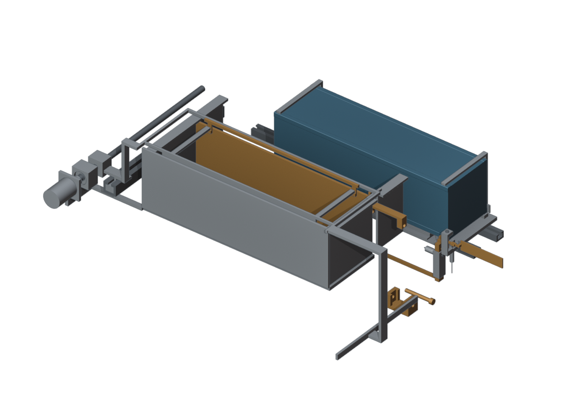
Self-contained geometry, STEP parts, native application capture and report. All seven concepts remain subject to the controlled selection gates.
21 October: geometry, stiffness and native contact review
The separate FM06-R1 research revision contains 30 native assembly/STEP poses, 70 independently checked reference part exchanges and 28 continuous prescribed rigid-translation checks. A backstop junction missed by solid-validity checks is corrected. These are nominal geometry results, not manufacturing or loaded-clearance acceptance.
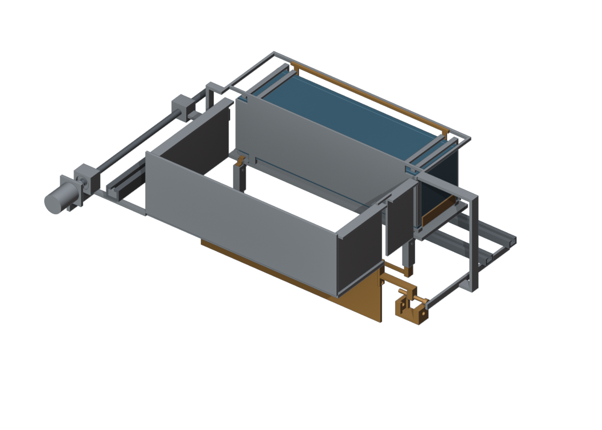
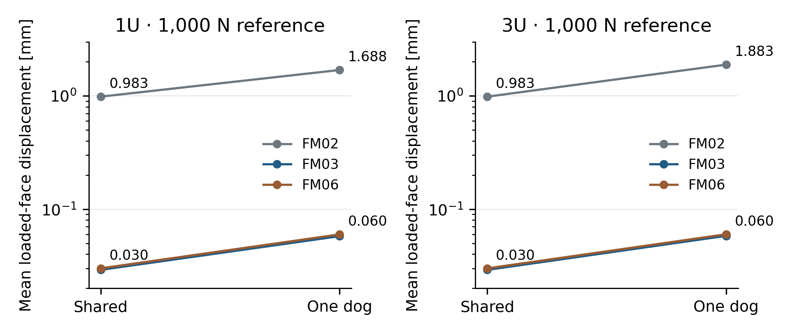
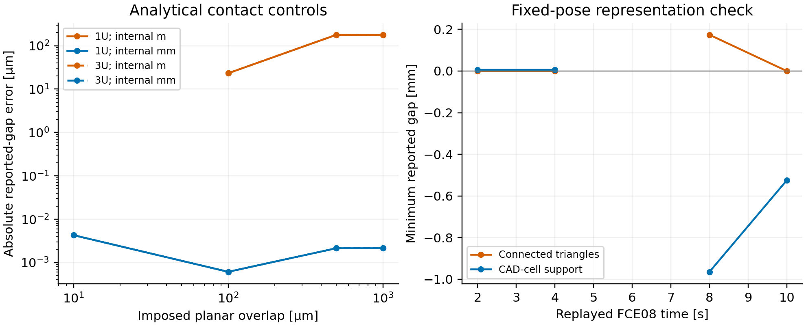
The twelve-case capture includes ten endpoint sequences and two injected-fault aborts. Eighty-four selected full-solid poses bound the recorded geometric residuals; they do not certify continuous loaded clearance. Current contact-method report, source, controls and native outputs.
Self-contained report, native inputs, CAD/STEP, checks and retained failures. All seven feeder architectures remain unselected. Evaluated Gen5 is unchanged.
Earlier candidate geometry · 19 October
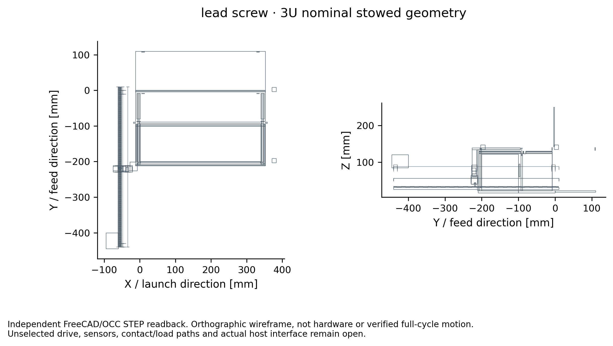
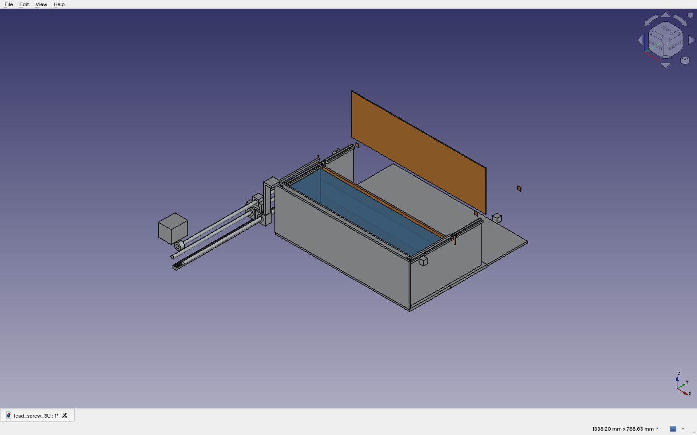
The earlier FDR-08 package contains fourteen editable native assemblies and twenty-eight STEP states. Exact intersections are checked at nine transfer stations, one stowed pose and five gate heights per case. The rectangular payload sweep covers only straight translation against fixed feed-state geometry. Nonlinear indexing, handoff, return, loaded deformation and contact are outside that proof.
What the mechanisms demand
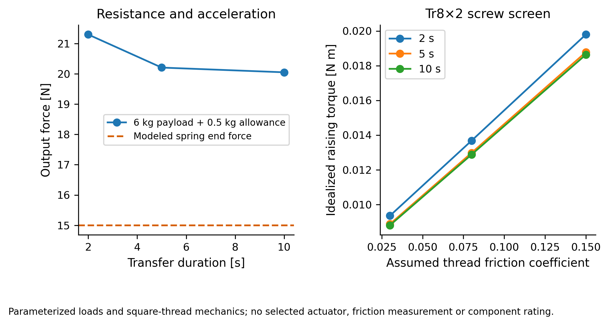
| Candidate | Useful feature | Decisive unresolved concern |
|---|---|---|
| Lead screw | Reversible positive displacement | Nut, bearing, brake and vacuum-duty ratings; no reliance on friction self-lock |
| Spring / two gates | Stored feed energy | 15 N end force fails higher resistance cases; governor and dual-barrier proof |
| Rack / pawl | Discrete indexing | Tooth engagement, bounce, holdback and partial strokes |
| Indexed drum | One shared transfer window | Loaded rotor indexing, envelope, independent cell locks and common-path blockage |
| Pantograph | Compact folded linkage | Near-flat force, joint play and independently sequenced platforms |
| Telescoping carriage | Compact retracted length | Stage order, overlap, positive stops and anti-separation |
| Belt shuttle | Low moving drive mass | Tension, creep, breakage and independent arrest |
Retain adverse cases
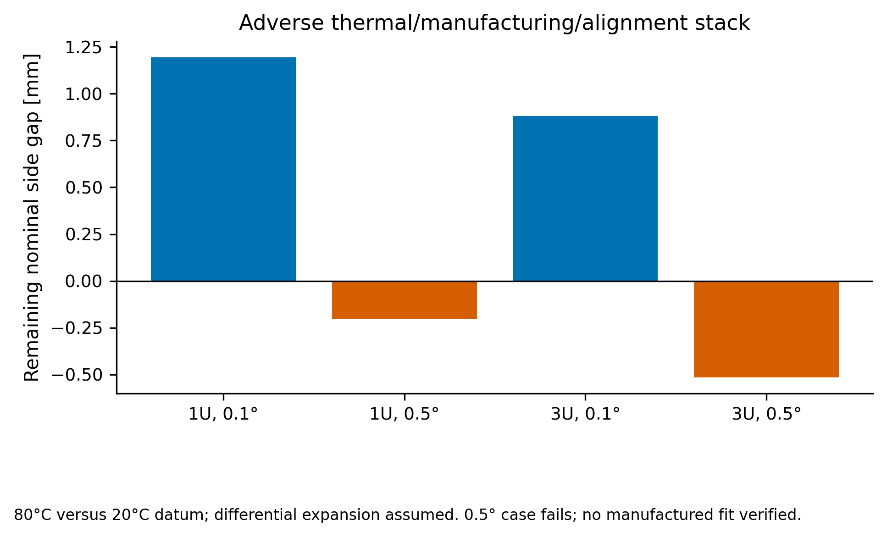
The capture-rack cantilever screen also fails adverse mean-arrest cases: its 1 mm tooth root reaches approximately 1,973 MPa nominal bending under the largest computed mean force. Actual peak force and a selected material allowable are unknown; this is a redesign finding, not a working positive lock.
Native structural output, within its fixture
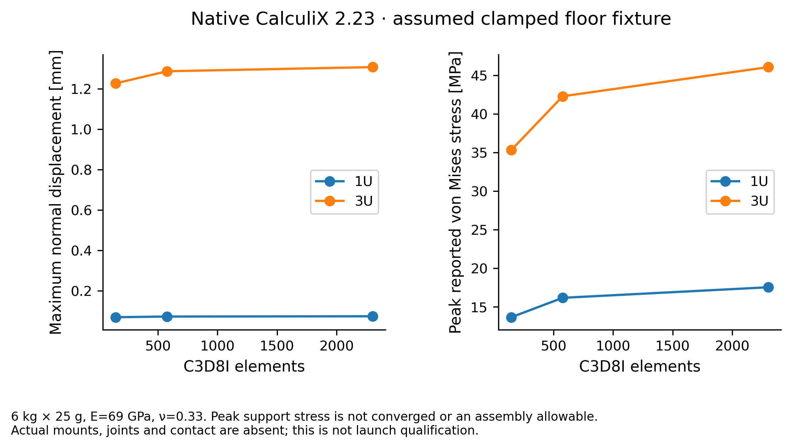
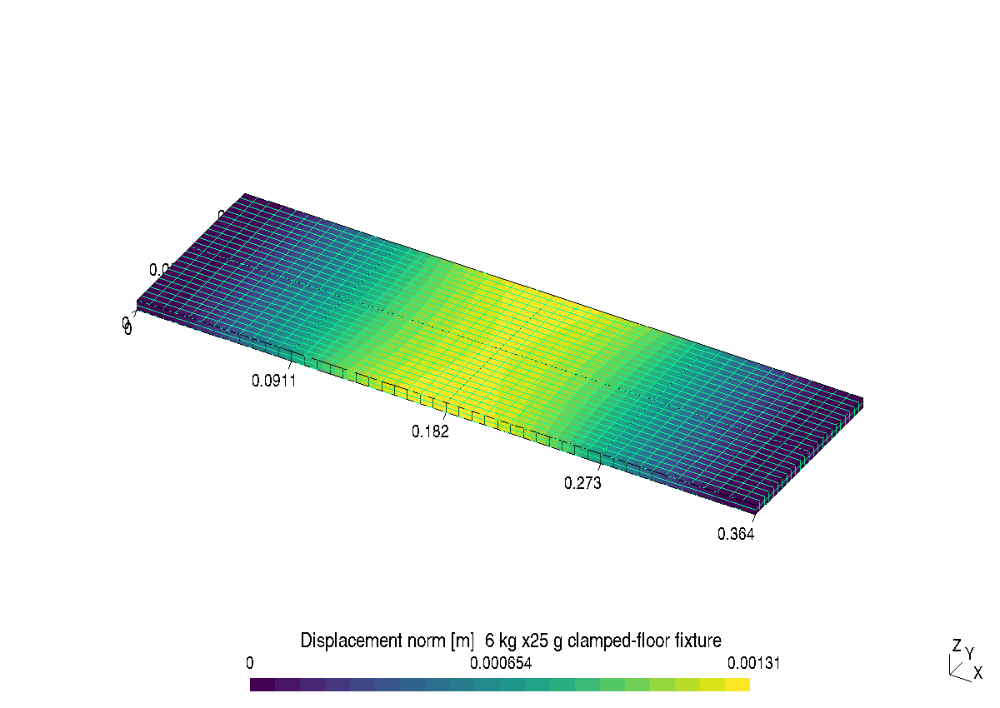
Read the engineering record
Report, local source/CAD archive, material BOM/CG/inertia, issue dispositions and native results. All seven research candidates in Labs. Safety-led ordinal scores remain hypotheses with overlapping intervals; incomplete mandatory evidence prevents a final selection.
FM-02: revised captive handoff and actuation screens
20 October 2026. A 12 mm underfloor receiving frame and two endpoint crosspins replace the tall latch. The restraints now belong to a connected sled. Twenty-eight native/STEP poses and 26 continuous prescribed rigid-translation phases have no represented penetration. This is captive handling; launch, free separation and complete reset are not simulated.
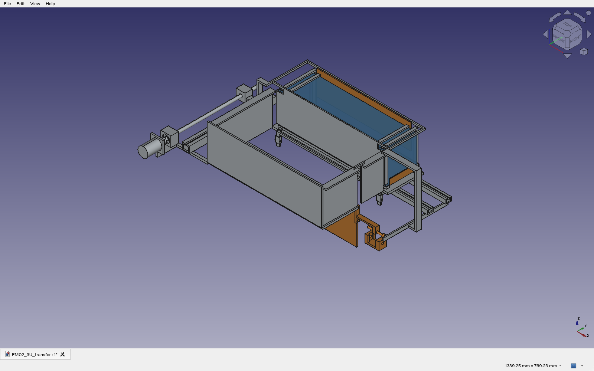
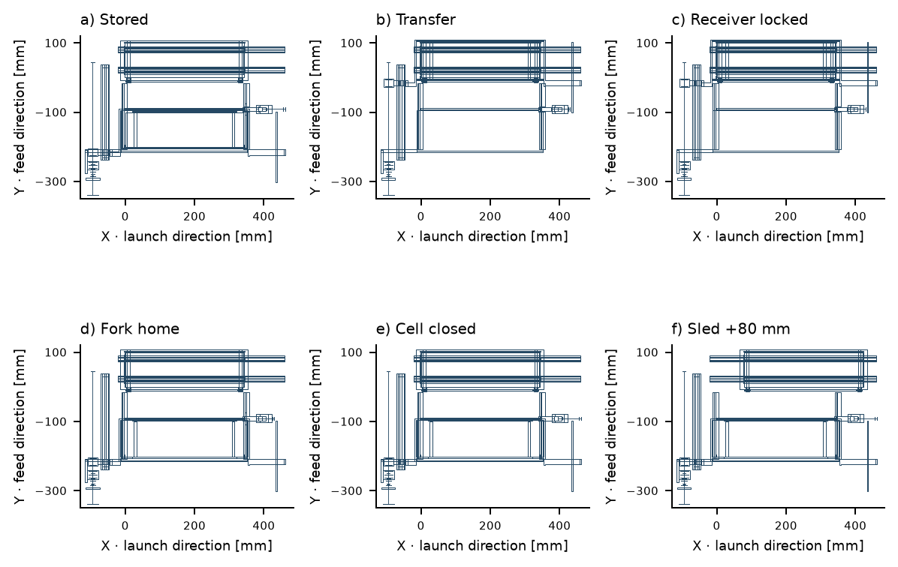
All 972 sampled ground-drive decisions agree with polynomial extrema/integrals. The study retains 115/324 nonpositive fit residuals, 12/54 winding-temperature failures, 96 brake no-stop cases and 72 finite runouts above the proposed allowance. The integrated drive and braking candidate are not installed in this CAD.
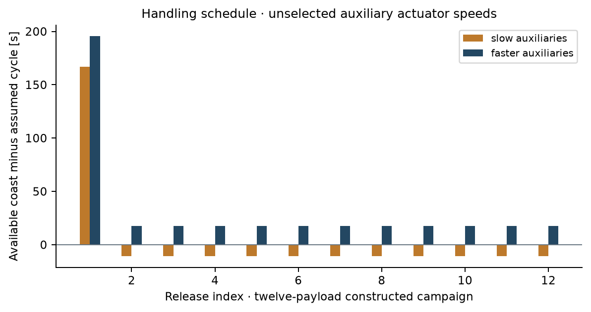
Self-contained nine-page report, source, native CAD/STEP, reference sheets, logs, failed cases and provenance. Axial pin retention, actual actuation, loaded contacts, complete deployment/reset and installed four/twelve-cell integration remain open. All seven feeder architectures remain unselected.